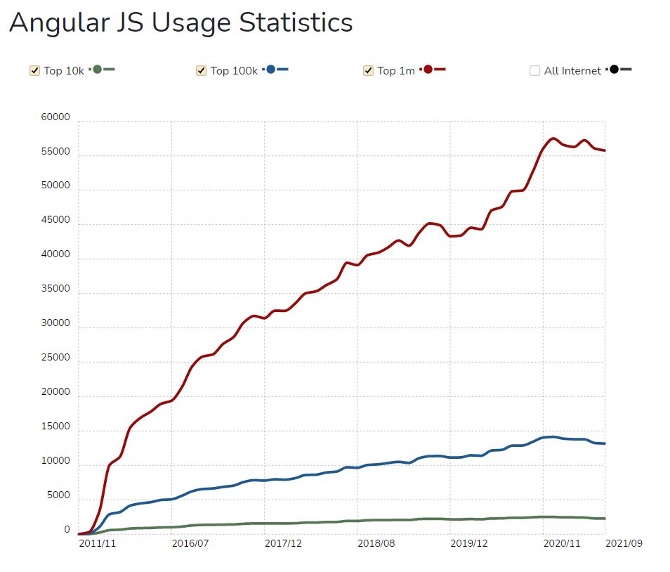

Веб-фреймворки. Краткое описание и виды.
Фреймворки - это программная оболочка, которая позволяет упростить и ускорить решение технически сложных или нагруженных проектов. Как правило, содержит только базовые программные модули, а все специфичные для проекта компоненты реализуются разработчиком на их основе. Тем самым достигается не только высокая скорость разработки, но и большая производительность и надёжность решений.
Веб-фреймворк – это программная платформа, предназначенная для поддержки и разработки веб-приложений, включая веб-службы, веб-ресурсы и веб-интерфейсы. Нацелены на автоматизацию расходов, связанных с общими действиями, выполняемыми в веб-разработке и состоят только из основных модулей, нужных для разработки, т.е. являются набором файлов, как правило, без графической оболочки.
Основные преимущества в работе с фреймворками:
- Повышение удобства и скорости разработки;
- Уменьшение затрат на создание и разработку приложений;
- Оптимизация рабочего процесса;
- Написание чистого кода, не требующего существенной переработки в дальнейшем;
- Во многих веб-фреймворках идентичный подход к организации компонентов приложения, что упрощает понимание архитектуры приложения.
- Более высокая стабильность решения и безопасность. Достигается благодаря тому, что большее количество людей задействовано в создании продукта, что делает работу более качественной.
- Безопасность. Все создатели фреймворка следят за ним и оперативно устраняют проблемы и угрозы.
- Легко расширить функционал.
- Программное обеспечение по итогу будет более быстрым и эффективным.
- Если программист освоил несколько фреймворков, он всегда будет конкурентоспособным на рынке.
Как итог, фреймворк берет на себя большую часть работы, что ускоряет и улучшает процесс.
К сожалению, у фреймворков тоже есть свои недостатки:
- Почти все фреймворки имеют открытый исходный код, это влияет на их защищенность от внешних угроз.
- Необходимо изначально потратить время на изучение фреймворка, а также это продукт другого программиста и могут возникнуть проблемы в понимании его функционала и как он работает.
- Необходимость переучиваться при смене продукта.
Неоднозначная особенность фреймворка – все нужно писать самостоятельно. С одной стороны, у вас может это занять дольше времени и нет готового примера, с другой стороны когда вы написали что-либо один раз, то можете использовать это в дальнейшем.
Неоднозначная особенность фреймворка – все нужно писать самостоятельно. С одной стороны, у вас может это занять дольше времени и нет готового примера, с другой стороны когда вы написали что-либо один раз, то можете использовать это в дальнейшем.
По двум основным функциям выделают два типа фреймворков: работа на серверной стороне (бэкенд) и работа на клиентской стороне (фронтенд).
Неоднозначная особенность фреймворка – все нужно писать самостоятельно. С одной стороны, у вас может это занять дольше времени и нет готового примера, с другой стороны когда вы написали что-либо один раз, то можете использовать это в дальнейшем.
Рис.1 Типы Веб-фреймворков
Серверные фреймворки (Бэкенд-фреймворки):Работают с внутренней частью приложения. Правила и архитектура этих фреймворков позволяют создавать простые страниц и формы различных типов, что упрощает процесс разработки. Однако для создания веб-приложения с хорошо разработанным интерфейсом, нужно обладать более широкой функциональностью. Данные фреймворки повышают безопасность в случае веб-атак и формируют выходные данные. С помощью них обрабатываются HTTP-запросы, контролировать и управлять базой данных, а также сопоставлять URL-адреса. Серверные фреймворки в основном отвечают за отдельные, но критически важные части приложения, без которых оно не сможет работать должным образом. Самыми популярными бэкенд-фреймворками являются Django, Zend, Yii2, Symfony, Laravel, Express.js, Ruby on Rails.
Клиентские фреймворки (фронтенд-фреймворки):Отвечают за внешнюю сторону приложения, то есть зато, что видит пользователь, когда открывает приложение. Главным отличием от серверных является то, что они никак не связаны с логикой приложений. Их работа происходит внутри браузера. С их помощью улучшают и внедряют новые пользовательские интерфейсы. Фронтенд-фреймворки позволяют создавать разные анимации и одностраничные приложения. Самыми популярными фронтенд-фреймворками являются Backbone+Marionette, Angular, Ember.js, Vue.js.
Многофункциональные фреймворки (Фуллстек-фреймворки):Существует еще многофункциональный или же фулл-стек фреймворк Meteor. Он удовлетворяет почти все потребности как со стороны клиента, так и со стороны сервера, что делает его чрезвычайно популярным. Одним из его достоинств является то, что не нужно тратить время на налаживание взаимодействия между двумя фреймворками через REST API – можно просто выбрать Meteor и ускорить процесс разработки. В нем обе стороны — серверная и клиентская — работают на одном языке, поэтому есть возможность создавать и использовать для них один и тот же код. Еще одна особенность - «режим реального времени» - можно что-то менять в одном интерфейсе, а изменения будут происходить и в остальных. Наглядным примером такой системы служат общедоступные документ или электронная таблиц. Когда добавляются комментарии на страницы, которые вы читаете или редактируете, другие пользователи также будут их видеть.
Как было сказано выше, фреймворки веб-разработки отличаются по размеру. Есть несколько “монстров” в мире фреймворков, которые предлагают решения для всего. Но некоторые, “легковесные”, фреймворки ориентированы на решение конкретной задачи. Такие фреймворки называются микрофреймворками. Они не предоставят вам все необходимое, но иногда лучше и функциональнее разложить процесс на несколько подходов. При необходимости расширять функционал микрофреймворка с помощью сторонних приложений, библиотек или других фреймворках, а также объединять с большим фреймворком.
Рассмотрим подробнее архитектуру веб-фреймворка.Несмотря на то, что каждый фреймворк индивидуален, в них есть несколько общих вещей.
Архитектура почти всех фреймворков основана на декомпозиции нескольких отдельных уровней (приложений, модулей и так далее).Благодаря этому можно расширять функциональность в соответствии с требованиями и интегрировать изменения в код фреймворка или использовать сторонние приложения, разработанные внешними поставщиками. Эта гибкость – одно из ключевых преимуществ веб-фреймворков. Существует множество сообществ с открытым исходным кодом и коммерческих организаций, которые создают приложения или расширения для популярных фреймворков (Django REST Framework, ng-bootstrapи т.д.).
MVC - Модель, Представление и контроллер - это три вещи, из которых состоит каждая веб-платформа. Считается базовой структурой, но среди них может быть несколько изменений.
Рис.2 Модель MVC
Модель знает все о содержании и структуре приложения. После получения пользовательских входных данных от контроллера она сообщает, как обновленный интерфейс должен выглядеть непосредственно в представлении.
Представление - это интерфейс приложения. Определяет, как пользователь может взаимодействовать с любой из его частей. Представление получает ввод пользователя, передает его контроллеру для анализа и обновляет или собирает себя в соответствии с инструкциями модели (или контроллера, если изменение незначительное). Также отвечает за визуальное отображение данных (диаграммы, графики и т.п.)
Контроллер – посредник между моделью и представлением. Он получает пользовательский ввод от Представления, обрабатывает его и сообщает Модели (или Представлению), какие изменения следует внести.
Когда каждый компонент архитектуры отвечает за одну линию задач, проект становится прозрачным, гибким и простым в обслуживании. Кроме того, архитектура MVC позволяет:
- Параллельная разработка (меньше времени на выполнение)
- Повторное использование кода
- Исправление или изменение одного из компонентов без необходимости обновления других
- Настройка URL-адресов.
Основные особенности веб-фрейморков:
- Веб-кэширование - это кэширование веб-документов с целью уменьшения использования пропускной способности, нагрузки на сервер, т.е. помогает избежать перегрузки сервера. Хранит копии документов, проходящих через него, а также последующие запросы могут быть удовлетворены из кэша при соблюдении определенных условий. Работает на серверной стороне.
- Скаффолдинг – позволяет веб-фрейморку автоматически создать типичные части приложения или всю струтруку проекта, если речь идет о инициализации. Благодаря этому увеличивается скорость разработки, а также кодовая база стандартизируется. Но стоит учитывать, что скаффолдинг поддерживается только некоторыми фреймворками MVC.
- Система веб-шаблонов - это набор различных методологий и программного обеспечения, реализованных для создания и развертывания веб-страниц.
- Безопасность - некоторые веб-платформы поставляются с системами аутентификации и авторизации, которые позволяют веб-серверу идентифицировать пользователей приложения и ограничивать доступ к функциям на основе некоторых определенных критериев.
- Сопоставление URL-адресов – упрощает индексацию сайта поисковыми системами, создавая при этом понятное и красивое название сайта.
- Приложения - веб-фреймворки поддерживают множество типов веб-приложений. Большинство поддерживают создание блогов, форумов, веб-сайтов общего назначения, систем управления контентом и т.д.
jQuerry. Область применения и примеры.
jQuery – это кросс-платформенная JavaScript-библиотека, направленна на связь между JavaScript, HTML и CSS на сайте. Считается наиболее популярной и востребованной современной библиотекой JavaScript.Была выпущена Джоном Регисом в 2006 году.
На официальном сайте сказано, что “jQuery-это быстрая, небольшая и многофункциональная библиотека JavaScript. Это значительно упрощает такие вещи, как обход и манипулирование HTML-документами, обработка событий, анимация и Ajax, благодаря простому в использовании API, который работает во множестве браузеров. Сочетая универсальность и расширяемость, jQuery изменил способ написания JavaScript миллионами людей. ”.
Данная библиотека делает разработку на javascript намного быстрее и проще. Позволяет быстро разрабатывать скрипты. Но в настоящее время чистый javascript продвинулся настолько, что использование jQuery для многих проектов становится ненужным.
Рис.3 Официальный сайт jQuery
Возможности библиотеки jQuery:
- Кроссбраузерные CSS селекторы;
- Удобный переход по дереву DOM, включая поддержку XPath как плагина;
- Визуальные эффекты;
- События;
- AJAX;
- Система плагинов;
Плюсы jQuerry
- Открытый исходный код доступен на Github, т.е. можно создать собственную версию jQuery;
- Простая архитектура на основе плагинов;
- Можно добавлять собственные методы;
- Простой синтаксис;
- Очень много готовый плагинов, охватывающих большую часть запросов (Scrollpane, jReject, Animsition и т.д.);
- Простой доступ к странице (с помощью функции $("myElement")) ;
- Поддержка старых версий браузеров (кроссбраузерность);
Минусом является то, что неопытный программист может просто не понимать, как работает данная библиотека и тем самым вызвать конфликтные ситуации в коде, без понимания как их можно исправить. Также не стоит подключать эту библиотеку только ради одного какого-то эффекта – это будут просто лишние 64 килобайт кода.
Существуют еще дополнительные проекты jQuery – jQuery UI (набор эффектов, взаимодействий, виджетов и с пользовательским интерфейсов на основе последней версии jQuery) и jQuery Mobile (помогает в создании адаптивных веб-сайтов и приложений, которые будут доступны и на ПК, и на смартфонах).
Для использования библиотеку jQuery надо скачать с официального сайта, а далее подключить. Обычно подключается в веб-страницу как внешний файл javascript. Пример включения представлен на рисунке 4.
Рис. 4 Пример подключения jQuerry
Основной функцией библиотеки jQuery является $(). Она вызывается всеми методами jQuery. Если на сайте применяются другие библиотеки JavaScript, где можно использовать $(), то для удобства можно использовать ее синоним – jQuery. Является единственной функцией, которая добавляется в глобальное пространство имен. Вне зависимости от параметров, переданных в функцию, $ вернет список объектов, над которым уже определены все доступные jQuery-функции. Это позволяет работать с любыми объектами - уже существующими на странице, созданными динамически или полученными через AJAX - так, как будто это одни и те же элементы, уже существующие на странице.
Работу с данной библиотекой можно разделить на получение jQuery-объекта с помощью $() и на вызов глобальных методов у объекта $.
Основными областями применения библиотеки jQuery является веб-дизайн, разработка сайтов. Например, на данной библиотеке можно сделать навигацию по картинкам в портфолио (рис. 5), полноразмерное слайдшоу (рис.6), анимированную диаграмму (рис.7), всплывающие анимированное меню, появление предпросмотров при наведении и т.п.

Рис. 5. Навигация по картинкам в портфолио Рис. 6. Полноразмерное Слайдшоу Рис.7 Анимированная диаграмма
Bootstrap. Область применения и примеры.
Bootstrap - это бесплатная CSS-платформа с открытым исходным кодом, предназначенная для адаптивной, мобильной интерфейсной веб-разработки. Он содержит шаблоны дизайна на основе CSS и HTML. Данные шаблоны нужны для типографии, форм, кнопок, навигации и других компонентов интерфейса. Также включает JavaScript-расширения. Bootstrap является Фронтенд - фреймвокром. Отлично подходит для небольших проектов, где нужно быстро собрать верстку, но вообще используется в проектах разного масштаба.
Рис.8. Официальный сайт Bootstrap.
По состоянию на август 2021, Bootstrap является десятым по количеству звезд проектом на GitHub, с более чем 152 000 звездами.
Первоначально был разработан Марком Отто и Джейкобом Торнтоном в Twitter в качестве основы для обеспечения согласованности между внутренними инструментами. До Bootstrap для разработки интерфейса использовались различные библиотеки, что приводило к несоответствиям и высокой нагрузке на обслуживание. Был переименован в свое нынешнее название и выпущен с открытым кодом 19 августа 2011 года. 31 января 2012 года был выпущен Bootstrap 2. В отличии от предыдущей версии поддерживал адаптивный веб-дизайн, а также были изменены многие уже существующие компоненты и добавлены новые. 19 августа 2013 года был выпущен Bootstrap 3. Его оснастили новой системой плагинов с событиями в пространстве имен. Bootstrap 4 был выпущен окончательно 18 января 2018 года с существенными изменениями. Был очень сильно переписан код, Less заменен на Sass, добавление Reboot коллекция изменений CSS для конкретных элементов в один файл на основе Normalize, отменена поддержка IE8, IE9и iOS 6, добавлена поддержка гибкой коробки CSS, добавлены параметры настройки навигации, добавлено переключение с блока пикселей в CSS на корневую ems, увеличен глобальный размер шрифта с 14 пикселей до 16 пикселей для улучшения читаемости, улучшен стиль форм, кнопок, выпадающих меню, медиа-объектов и классов изображений. Также Bootstrap 4 поддерживает последние версии браузеров. Bootstrap 5 был официально выпущен 5 мая 2021 года с изменениями: новый компонент меню offcanvas, устранение зависимости от jQuery в пользу JavaScript, переписывание сетки для поддержки адаптивных желобов и столбцов, расположенных за пределами строк, перенос документации с Jekyll на Hugo, перемещение инфраструктуры тестирования из QUnit в Jasmine, добавление пользовательского набора значков SVG, добавление пользовательских свойств CSS, улучшенный API, улучшена настройка документов.
При использовании Bootstrap нужно обращать внимание на то, что многие старые версии браузеров он не поддерживает.
Рассмотрим преимущества и недостатки данного фреймворка: Преимуществами являются:
- Экономия времени. Благодаря ему время на разработку проектов уходить меньше.
- Адаптивность. Дизайн сайта будет корректно отображаться на любом устройстве.
- Кросс-браузерность. Сайты одинаково отображаются в любом браузере
- Быстрое освоение и низкий порог вхождения. На Bootstrap очень легко начать работу и очень много бесплатных онлайн-курсов, которые помогают начинающим познакомится с данным продуктом.
- Понятный код для других разработчиков.
- Единство стиля. Все элементы фреймворка гармонично смотрятся друг с другом.
- Большое количество готовых, качественно сделанных компонентов.
- Возможность модифицировать блоки. Если программист хорошо разбирается в Bootstrap и CSS с помощью открытого исходного кода он может модифицировать и быстро создать индивидуальный сайт.
Недостатки
- Шаблонность. Сайты похожи друг на друга.
- Отсутствие гибкости.
- Не поддерживает старые браузеры. При использовании Bootstrap нужно обращать внимание на то, что на старых версиях браузера сайты могут изображаться некорректно.
- Вес проекта. Например, Bootstrap 4 вместе со библиотеками JavaScript весит около 300кб. Из-за этого могут возникнуть проблемы при разработке мобильных приложений, ориентированных на использование при слабом интернет соединении.
Bootstrap для использования доступен в двух вариантах ‒ предварительно скомпилированный и основанный на версии исходного кода. Опытные разработчики предпочитают последнее, так как это позволяет им настраивать стили в соответствии со своими проектами.
Bootstrap состоит из:
- Инструментов для создания макета (обёрточных контейнеров, мощной системы сеток, гибких медиа-объектов, адаптивных утилитных классов);
- Классов для стилизации базового контента: текста, изображений, кода, таблиц и figure;
- Готовых компонентов: кнопок, форм, горизонтальных и вертикальных навигационных панелей, слайдеров, выпадающих списков, аккордеонов, модальных окон, всплывающих подсказок и др.;
- Утилитных классов для решения традиционных задач наиболее часто возникающими перед веб-разработчиками: выравнивание текста, отображение и скрытие элементов, задания цвета, фона, margin и padding отступов, и т.д.
Рассмотрим подробнее систему сеток Bootstrap. Она предназначена для создания макетов страниц и упрощает разработку отзывчивых веб-сайтов. Сетка разделена на 12 колонок и эта структура, настроенная разработчиком, и является макетом страницы.
Рис.9. Пример сетки.
Для ее использования нужно в код добавить класс .row к главному элементу div страницы. При настройке размеров вложенных элементов используют следующие классы (вместо звёздочки в конце имени класса указывается число столбцов базовой 12-колоночной сетки, которое должен занимать конкретный элемент): col-lg-*(класс, используемый для страниц, предназначенных для устройств с большим экраном вроде ноутбуков), col-md-* (класс для страниц, рассчитанных на устройства с экраном среднего размера, таких, как планшеты), col-sm-* (класс для страниц, которые рассчитаны маленькие экраны, например, такие, как у смартфонов).
Подключить Bootstrap можно через npm (npm install bootstrap) или подключить к странице с использованием сети, добавив следующую строчку в head
Из 100 000 лучших веб-сайтов больше 20% сделаны на Bootstrap в качестве основы. Самыми яркими примерами являются сайт ФБР США (рис.10), Spotify (рис.11), Netflix (рис. 12), Nintendo, сайты крупнейших компаний в мире (Toyota Motor , Ford Motor, Verizon Communications и т.д.), сайты IT и технологических компаний ( Microsoft, GitLab и т.д.), сайты государственных организаций.
Рис.10. ФРБ США Рис.11. Сайт Spotify Рис.12. Сайт Netflix
AngularJS. Область применения и примеры.
AngularJS - основанная на JavaScript интерфейсная веб-платформа для разработки динамических и обычно одностраничных приложений. Изначально была запущена как проект в Google, но на данный момент платформа с открытым исходным кодом. Поддерживается в основном самим Google и сообществами частных лиц и корпораций.
Рис.13. Официальный сайт AngularJS
В 2009 году данный фреймворк разработали Мишко Хевери и Адамом Абронсом в ООО “Brat Tech” в качестве программного обеспечения для онлайн-сервиса хранения JSON, который измеряется мегабайтами. Главной целью этого проекта было уменьшить количество сил и времени, потраченных на создание корпоративных приложений. Находилось это в веб-домене "GetAngular.com", и имело несколько подписчиков, прежде чем разработчики решили отказаться от бизнес-идеи и выпустить Angular, написанный на TypeScript, в качестве библиотеки с открытым исходным кодом
В последствии Абронс покинул проект, а Хевери, Игорь Минар и Войта Джин работающие в Google, продолжат развивать и поддерживать библиотеку. В марте 2014 команда разработчиков начала работу над AngularJS 2.0. Версия писалась с нуля и была сильно не похожа на своего предшественника, поэтому позже было принято решение развивать ее как отдельный фреймворк Angular. В июле 2012 года от разработчиков фреймворка был выпущен плагин Batarang для браузера Google. Он является расширением, которое помогает в отладке и создании графических интерфейсов веб-приложений.
Согласно опросу 2020 года разработчиков StackOverflow, более 41% разработчиков используют версию Angular или AngularJS для разработки веб-интерфейсов и мобильных интерфейсов, что показывает популярность и удобность данного фреймворка. Статистику использования, взятую с сайта BuiltWith можно посмотреть на рисунке 14.
Рис.14. Статистика использования AngularJS
Несмотря на сложность перехода с первой версии на Angular, можно выделить плюсы этого:
- Архитектура. Angular базируется на иерархии компонетов и сервисов, что позволяет повторно использовать элементы, когда как AngularJS имеет более жесткие рамки в диапазоне и контроллерах, что усложняет повторное использование элементов.
- Фреймворк. AngularJS универсален, но гораздо менее безопасен и управляем, чем Angular.
- Язык. AngularJS использует общеизвестный JavaScript, что позволяет очень легко научиться выполнять задачу и является также его перимуществом. Но в нем нет функции проверки типов, проверки на ошибки времени компиляции. Angular использует единообразие и гибкость языка TypeScript. Он улучшает код, уменьшает количество ошибок во время выполнения и работает в нескольких системах. TypeScript также обеспечивает обратную совместимость с JavaScript, обеспечивает более высокую защиту и помогает выявлять ошибки на ранних этапах разработки кода.
- Создание веб-приложений. AngularJS не создавался специально для мобильных приложений, в отличии Angular.
- “Material Design”. В Angular 5 была реализована возможность создавать самостоятельно разработчикам компоненты пользовательского интерфейса, а уже в 7 версии можно разрабатывать адаптивные и много платформенные приложения. Улучшение пользовательского интерфеса – часто одна из главных причин, по которым организации и разработчики переходят на Angular.
- Скорость. Angular 6 и выше имеют новый производственный движок, который обеспечивает более быструю компиляцию, более качественную отладку и занимает меньше места
- Привязка данных. Двусторонняя привязка данных AngularJS может создавать задержки и пробки в процессе разработки.
- Поддержка инструментов. Angular использует интерфейс командной строки, и это уменьшает время, используемое для создания приложения.
Многие разработчики AngularJS осознают преимущества перехода на Angular, но, поскольку процесс миграции сложен, они не решаются сделать переход.
AngularJS полностью основан на HTML и JavaScript, что является преимуществом в его изучении – не нужны сторонние языки. Он направлен на упрощение как разработки, так и тестирования приложений. В нем используется схема model-view–controller (MVC), разделяющая логику, представление и данные приложения. Именно эта структура позволяет удобно создавать одностраничные веб-приложения. При использовании службы $http происходит взаимодействие с удаленными HTTP-серверами
На рисунке 15 приведен простой пример AngularJS, который дополняет в надпись все, что вы вводите в текстовое поле.
Рис.15. Пример AngularJS
Среди преимуществ AngularJS можно выделить:
- Низкий порог вхождения.
- Богатый набор функций.
- Имеет много пользовательский расширений.
- Огромное количество книг и онлайн-ресурсов для изучения.
- Декларативный стиль кода.
- Использование директив.
- Высокая скорость разработки.
- Использование MVC с разделением логики, представления и данных приложения.
- Поддержка Google.
Рассмотрим подробнее директивы фреймворка. Директивы нужны для структурирования элементов, которые необходимо повторно использовать при помощи заданных имен. Обычно директивы начинаются с ng-. Например, ng-app автозагружает любое Angular приложение и представляет собой корень данного приложения. Для ее использования нужно просто прописать ее в любом HTML теге, обычно используется сам тег html. Важно помнить что данный директив пишется только один раз за код! Ng-bind – самостоятельно заменяет текст HTML-документа на значение выражения, которое передал пользователь. К популярным также относятся ng-model, ng-class, ng-controller, ng-repeat, ng-show, ng-switch, ng-view и ng-if.
Ng-model обеспечивает двухстороннее связывание данных, что является одним из главных преимуществ AngularJS. С помощью него достигается меньший размер кода, освобождается сервер от работы с шаблонами. Вместо этого шаблоны отображаются обычным HTML кодом с данными из области видимости, определенной в модели. Основную суть можно описать так: Изменится содержимое элемента — AngularJS изменит и значение модели. Изменится значение модели — AngularJS изменит текст внутри элемента.
При работе с данным Фреймворком надо учитывать, что версии 1.3 и более поздние не поддерживают Internet Explore 8 и его более ранние версии.
Область применения Angular JS обширна. Помимо динамических приложений, фреймворк также используется для создания веб-сайтов социального направления, аналогов Google Docs и т.п. Самыми яркими примерами AngularJS являются сайт британской газеты The Guardian (рис.16), YouTube для PS3, Weather.com, PayPal, VEVO (рис.17).
Рис. 16. Сайт The Guardian Рис. 17. Сайт VEVO
React. Область применения и примеры.
React - бесплатная библиотека JavaScript с открытым исходным кодом для создания пользовательских интерфейсов. Также часто его называют ReactJS или React.js. Он поддерживается Meta (ранее Facebook) и сообществом отдельных разработчиков и компаний. React часто применяют за основу при разработке одностраничных или мобильных приложений. Но для создания более качественного приложения на React нужно подключать дополнительные библиотеки для маршрутизации и определения функций на клиентской стороне.
Рис. 18. Сайт React
Создателем React является Джордон Уолк – инженер программист из Facebook. Предком библиотеки можно назвать FaxJS, выпущенный Джордоном ранее. Первая публикация была в ленте новостей в Facebook в 2011 года, а спустя год был снова освещен в Instagram.
В феврале 2015 года был анонсирован React Native – помощник в разработке собственный приложений на Android, IOS и UWP на базе React. С открытым исходным кодом стал доступен в марте 2015 года. 18 апреля 2017 года Facebook объявили о React Fiber. В отличии от старого алгоритма рендеринга в React, в fiber был новый набор внутренних алгоритмов рендеринга. В нем не изменили синтаксис программирования, а поменяли только способ его выполнения. Старые версии не были направлены на динамические сайты и приложения, что делало их немного неудобными.
Сравнение версий React приведены в таблице.
| Версия | Дата выхода | Изменения |
|---|---|---|
| 0.3.0 | 29 мая 2013 года | Первоначальный Публичный Релиз |
| 0.4.0 | 20 Июля 2013 года | Поддержка узлов комментариев div{/* */}/div, Улучшенные API рендеринга на стороне сервера, Удалена функция React.autoBind, Поддержка ключевой поддержки, Улучшения форм, Исправлены ошибки. |
| 0.5.0 | 20 октября 2013 года | Улучшено использование памяти, Поддержка событий выбора и композиции, Поддержка getInitialState и getDefaultProps, Добавлены React.version и React.isValidClass, Улучшена совместимость с Windows. |
| 0.8.0 | 20 Декабря 2013 | Добавлена поддержка строк и столбцов, отсрочки и асинхронности, цикла для audio & video, атрибутов автозамены. Добавлены события onContextMenu, Обновлены инструменты jstransform и esprima-fb, обновлен браузер. |
| 0.9.0 | 20 Февраля 2014 | Добавлена поддержка кроссоригина, загрузки и hrefLang, медиагрупп и приглушенных, песочницы, бесшовных и srcDoc, атрибутов области, Добавлены любые, массив, компонент, один тип, визуализация, форма для React.PropTypes, Добавлена поддержка событий onMouseOver и onMouseOut, Добавлена поддержка onLoad и onError для img элементов. |
| 0.10.0 | 21 марта 2014 года | Добавлена поддержка атрибутов srcSet и textAnchor, добавлена функция обновления неизменяемых данных, убедитесь, что все пустые элементы не вставляют закрывающий тег. |
| 0.11.0 | 17 Июля 2014 года | Улучшена поддержка SVG, Нормализовано событие e.view, команда Update $apply, Добавлена поддержка пространств имен, Добавлен новый API transformWithDetails, включает готовые пакеты в разделе dist/, MyComponent() теперь возвращает дескриптор, а не экземпляр. |
| 0.12.0 | 21 Ноября 2014 | Добавлены новые функции оператора распространения ({ ... }), Добавлена поддержка acceptCharset, classID, атрибутов HTML манифеста, React.addons.batchedUpdates, добавленных в API, @jsx React.DOM больше не требуется, исправлены проблемы с переходами CSS. |
| 0.13.0 | 10 марта 2015 года | Устаревшие шаблоны, предупрежденные в 0.12, больше не работают, порядок разрешения ссылок изменился, свойства удалены._pendingState и это._rootNodeID, Поддержка классов ES6, Добавлен API React.findDOMNode(компонент), Поддержка итераторов и неизменяемых последовательностей js, Добавлены новые функции React.addons.createFragment, устаревший React.addons.classSet. |
| 0.14.1 | 10 марта 2015 года | Устаревшие шаблоны, предупрежденные в 0.12, больше не работают, порядок разрешения ссылок изменился, свойства удалены._pendingState и это._rootNodeID, Поддержка классов ES6, Добавлен API React.findDOMNode(компонент), Поддержка итераторов и неизменяемых последовательностей js, Добавлены новые функции React.addons.createFragment, устаревший React.addons.classSet. |
| 15.0.0 | 7 Апреля 2016 года | Начальный рендеринг теперь использует document.createElement вместо генерации HTML, Больше никаких дополнительных span, Улучшена поддержка SVG, ReactPerf.getLastMeasurements()непрозрачен, Новые устаревшие версии введены с предупреждением, Исправлено несколько небольших утечек памяти, React DOM теперь поддерживает HTML-атрибуты cite и профиля и cssFloat, GridRow и свойства CSS GridColumn. |
| 15.1.0 | 20 мая 2016 года | Исправлена ошибка пакетной обработки, Обеспечено использование последней версии объекта-назначение, Исправлена регрессия, Удалено использование утилиты слияния, Переименованы некоторые модули. |
| 15.2.0 | 1 Июля 2016 года | Включена информацию о стеке компонентов, добавлена React.PropTypes.symbol, Добавьте обработку link загрузки в элемент и обработку ошибок в source элемент, Добавьте isRunning()API, Исправьте регрессию производительности. |
| 15.3.0 | 30 Июля 2016 | Добавлена React.PureComponent, Исправлена проблема с рендерингом вложенных серверов, Добавлены xmlns, xmlnsXlink для поддержки атрибутов SVG и политики ссылок на атрибуты HTML, обновлена надстройка React Perf, Исправлена проблема с ref. |
| 15.3.1 | 19 Августа 2016 | Улучшена производительность сборок разработки, Обновлен fbj, Улучшено время запуска React, Исправлена утечку памяти при рендеринге сервера, исправлено средство визуализации тестов React. |
| 15.4.0 | 16 Ноября 2016 года | Пакет React и сборка браузера больше не включают в себя React DOM, Улучшенную производительность разработки, Исправлены случайные сбои тестирования, API пакетных обновлений обновлений, производительность React и ReactTestRenderer.create(). |
| 15.4.1 | 23 Ноября 2016 | Реструктуризация назначения переменных, Исправлена обработка событий, Исправлена совместимость сборки браузера со средами AMD. |
| 15.4.2 | 6 Января 2017 года | Исправлены проблемы с сборкой, Добавлены отсутствующие зависимости пакетов, Улучшены сообщения об ошибках. |
| 15.5.0 | 7 апреля 2017 года | Добавлены функции react-dom/test-utils, Удалены зависимости от пользователей, Исправлена проблема с компилятором закрытия, Добавлено предупреждение об устаревании для React.createClass и React.PropTypes, Исправлена ошибка в Chrome. |
| 15.5.4 | 11 Апреля 2017 года | Исправлена совместимость с Enzyme путем предоставления пакетных обновлений на мелком рендере, Обновлена версия prop-типов, исправлен пакет react-addons-create-fragment, включающий преобразование loose-envify. |
| 15.6.0 | 13 Июня 2017 | Добавлена поддержка переменных CSS в атрибутах стиля и свойствах стиля сетки, Добавлено предупреждение об устаревании для React.createClass и React.ДОМ заводских помощников. |
| 16.0.0 | 26 Сентября 2017 года | Улучшена обработка ошибок с введением "границ ошибок", React DOM позволяет передавать нестандартные атрибуты, незначительные изменения в поведении setState, удалять react-with-addons.js создайте. Изменен в поведении методов планирования и жизненного цикла. |
| 16.1.0 | 9 Ноября 2017 года | Прекращение выпусков Bower, Исправлен запуск OnMouseEnter и onMouseLeave, Исправлен заполнитель textarea, Удален неиспользуемый код, Добавлена поддержка React DevTools. |
| 16.3.0 | 29 марта 2018 года | Добавлен новый официально поддерживаемый контекстный API, Добавлен новый пакет, чтобы избежать бесконечного цикла при попытке визуализации порталов с SSR, Устранена проблема IE/Edge. |
| 16.3.1 | 3 апреля 2018 года | Префикс частного API, Исправление ошибок регрессии производительности и обработки ошибок в режиме разработки, Добавление одноранговой зависимости, Исправление ложноположительного предупреждения в IE11 при использовании фрагмента. |
| 16.5.0 | 5 Сентября 2018 года | Добавлена поддержка профилировщика React DevTools, хорошо обрабатывающий ошибки в более сложных случаях, Добавлено событие onAuxClick для браузеров, Добавлены поля movementX и movementY в события мыши, Добавлены поля tangentialPressure и twist в событие указателя. |
| 16.6.0 | 23 Октября 2018 | Добавлена поддержка контекстного типа, уровни приоритета поддержки, продолжения и обратные вызовы, Улучшен механизм резервного копирования, Исправлено серое наложение в iOS Safari, Добавлен React.lazy() компонент для разделения кода. |
| 16.8.0 | 6 Февраля 2019 года | Добавлен ReactTestRenderer.act()и ReactTestUtils.act()для пакетных обновлений, Поддержка синхронных таблиц, переданных в React.lazy (), Улучшен API инициализации hook useReducer. |
| 16.8.6 | 27 марта 2019 года | Исправлена useReducer(), Исправлено предупреждения iframe в Safari DevTools,.добавлено предупреждение, если ContextType имеет недопустимые значения. |
| 16.10.0 | 27 Сентября 2019 года | Исправлен крайний случай, когда обновление hook не сохранялось в памяти. Очистка дополнительных полей во время монтирования, чтобы сэкономить память. Исправлена ошибка с обязательными текстовыми полями в Firefox. Предпочтительное использование Object.is вместо встроенного заполнения, когда это возможно. Исправлена ошибка при смешивании ожидания и обработки ошибок. |
| 16.11.0 | 22 Октября 2019 года | Исправлена ошибка, из-за которой обработчики mouseenter дважды срабатывали внутри вложенных контейнеров React. Удалины экспериментальные API-интерфейсы unstable_createRoot и unstable_createSyncRoot. (Они доступны в экспериментальном канале как createRoot и createSyncRoot.) |
| 16.13.1 | 19 марта 2020 года | Исправлена ошибка в устаревшем режиме ожидания. Предупреждение об отмене для межкомпонентных обновлений, которые происходят в жизненных циклах рендеринга класса |
| 16.14.0 | 14 Октября 2020 года | Добавьте поддержку для нового преобразования JSX. |
| 17.0.0 | 20 Октября 2020 года | " No New Features" позволяет постепенно реагировать на обновления из более старых версий. |
| 17.0.1 | 22 Октября 2020 года | React DOM - Исправляет сбой в IE11 |
| 17.0.2 | 22 марта 2021 года | React DOM - Удалите неиспользуемую зависимость для устранения SharedArrayBuffer предупреждения об изоляции между источниками. |
Выделим главные преимущества React:
- Легко освоить и начать использовать.
- Огромная база онлайн ресурсов для изучения.
- Многоразовые компоненты. Каждый компонент имеет свою логику и свой управляющий рендринг, а также возможность повторного использования.Это позволяет упростить разработку и обслуживание приложений, создать единый внешний вид.
- Виртуальный DOM. Любые изменения представления сначала будут выполнятся в виртуальном Dom, непосредственно в памяти, а не на экране. А далее уже алгоритм вносит нужные изменения в реальный DOM. Это помогает избежать ошибки и позволяет получить более высокую производительность.
- Полезные инструменты для разработки.
- Возможность писать на JSX. Этот язык представляет собой смесь JavaScript и HTML, что позволяет создать простой и чистый код.
- Рендеринг на стороне сервера. Данная функция обеспечивает создание универсальный веб-приложений, что ускоряет загрузку начальной страницы.
- Односторонняя привязка данных.
- Процесс обновления оптимизирован и регулярный
Но как и везде, у этого фреймворка тоже есть недостатки:
- Наличие глубоких знаний. React не полнофункциональный фреймворк, для хорошего его использования нужно и другие библиотеки и навыки.
- Большой размер библиотеки.
- Проблема индексации в поисковых системах.
- Руководство довольно тяжело написано для новичков
Рассмотрим подробнее компоненты React. Компонент – это участок кода, который является кусочком веб-страницы. А также представляет собой JavaScript-функцию. Это позволяет разделить интерфейс на части и работать с каждой отдельно, что упрощает разработку. Компоненты бывают функциональными и классовыми. Первые представляют с собой просто javascript-функцию, вторые же используют класс из ES6. Также компоненты в своем выводе могут вызывать другие компоненты, что позволяет делать детализацию разного уровня. Но важно помнить, что все React-компоненты должны вести себя как чистые функции в своих свойствах.
У компонентов есть свойства, вызываемые с помощью props. Также каждый дочерний компонент будет наследовать свойства от родительского. В Классе компонента св-ва передаются автоматически и доступны при вызове this.props. Собственные свойства компонента он не может изменить.
Область применения у React огромная. На нем можно сделать и крупные проекты, со сложной структурой, так и что-то небольшое. Часто используется для стартап проектов, приложений для переписки, соц.сетей, приложений e-commerce, форумов, блогов. Самыми известными сайтами являются Facebook (рис. 19), Instagram, WhatsApp (рис. 20), DropBox.


Рис. 19. Сайт Facebook. Рис. 20. Приложение WhatsApp.
Проанализировав и изучив веб-фреймворки можно однозначно сказать, что они облегчают и улучшают написание веб-сайтов и приложений, сокращая затраченные время и силы разработчиков. Фреймворки сейчас все еще продолжают набирать популярность, улучшатся и создаваться. Что-то устаревает, а что-то преобразуется в нечто новое, более качественное и удобное. Среди популярных веб-фреймворков помимо jQuerry, Bootstrap, AngularJS, React можно выделить Vue, Ember, Backbone, Express, Diango, Rails, Laravel, Spring.
Освоить фреймворки можно самостоятельно, ведь из-за актуальности темы много и пособий, и обучающих сайтов. Изучив один фреймворк, в остальных вы всегда будете находить что-то общее, что еще сильнее будет облегчать усвоение. А чтобы выбрать с какого начать, нужно просто определится характер вашего проекта и необходимые для реализации характеристики и условия.

Сайт по реферату подготовила студент группы А-12-19 Коняева Светлана.
- https://ru.bmstu.wiki/Web_framework
- https://saikt-online.ru/chto-takoe-frejmvorki-i-dlya-chego-oni-nuzhny/
- https://nikolaj-sarry.info/razrabotka/veb-frejmvorki-vvedenie-dlya-novichkov/
- https://djangostars.com/blog/what-is-a-web-framework/
- https://www.scnsoft.com/blog/web-application-framework#server-side
- https://jquery.com/
- https://thecode.media/jquery/
- https://intuit.ru/studies/courses/611/467/lecture/28798?page=3
- https://webformyself.com/chto-takoe-jquery/
- https://en.wikipedia.org/wiki/Bootstrap_(front-end_framework)
- https://timeweb.com/ru/community/articles/plyusy-i-minusy-bootstrap-1
- https://zina.design/bootstrap/sites/
- https://angularjs.org/
- https://en.wikipedia.org/wiki/AngularJS
- https://vc.ru/dev/149739-9-prichin-iz-za-kotoryh-ya-pereshel-s-angularjs-na-angular
- https://stfalcon.com/ru/blog/post/large-websites-using-AngularJS
- https://en.wikipedia.org/wiki/React_(JavaScript_library)#History
- https://www.telerik.com/blogs/5-benefits-of-reactjs-to-brighten-a-cloudy-day
- https://ddi-dev.com/blog/programming/pros-and-cons-reactjs-web-app-development/
- https://techrocks.ru/2021/01/27/7-react-projects-ideas-for-2021/
- https://dev-gang.ru/article/react-komponenty-i-parametry-aha8ymkvcs/